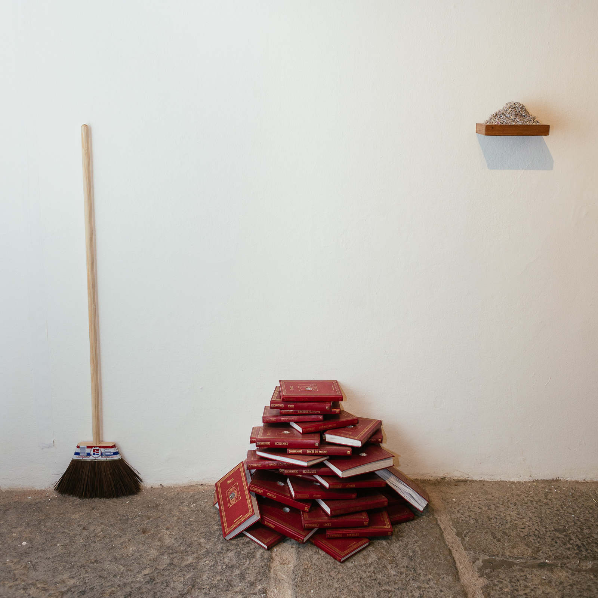
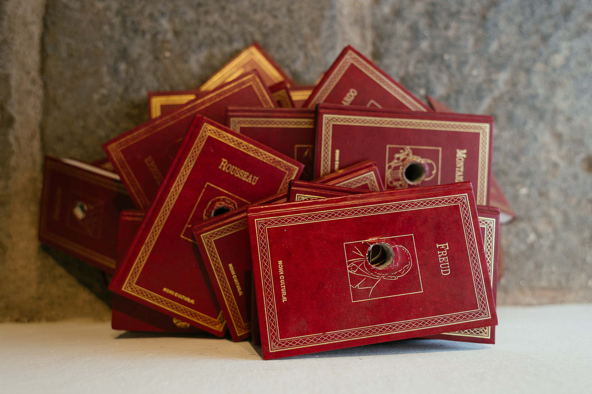
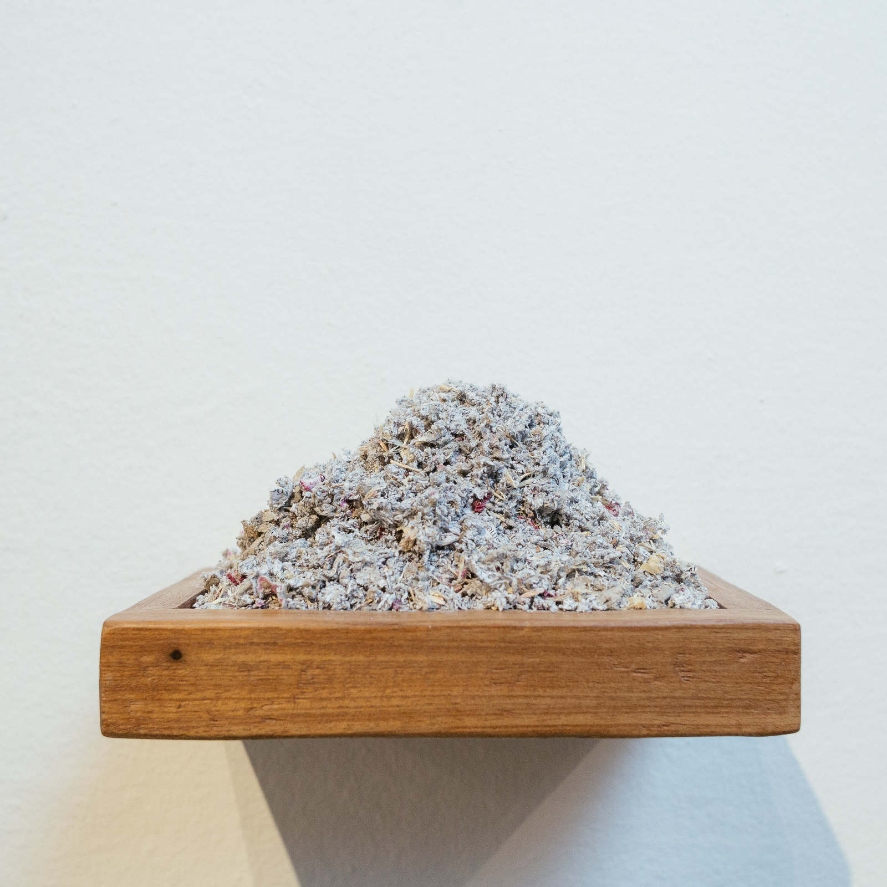
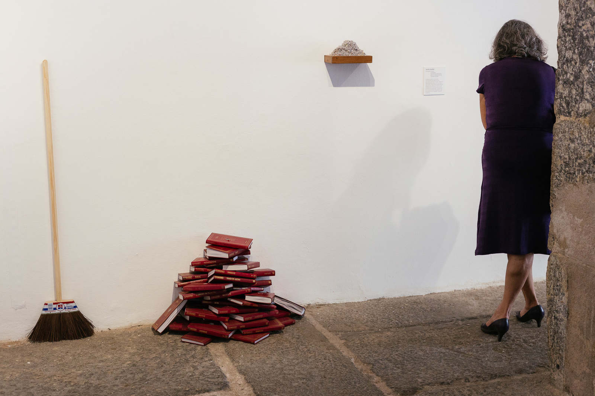
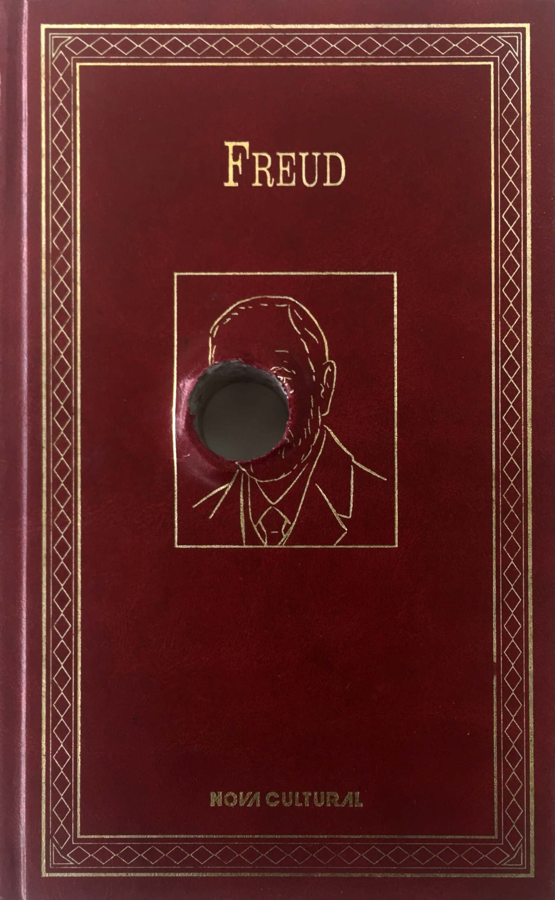
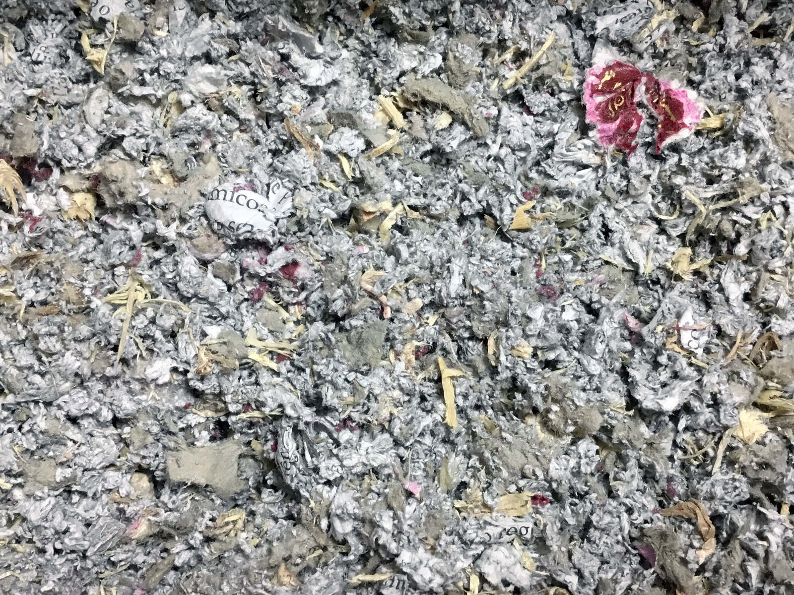
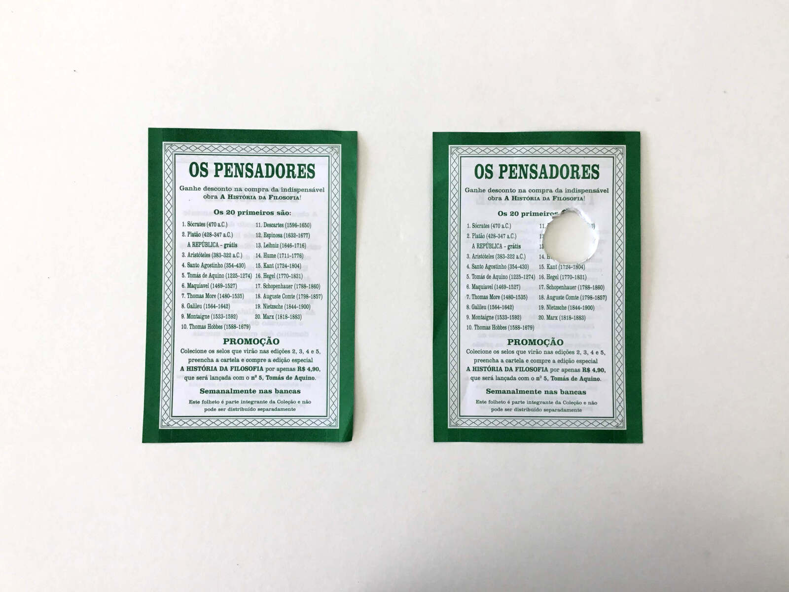

mundos em fricção / worlds in friction
mundos em fricção / worlds in friction
2018
a pensadora / the thinker
vassoura de piaçava / piaçava broom
134 x 29 cm
experimentar pelo buraco / try out through the hole
42 livros perfurados com serra copo / 42 drilled books
21 x 86 x 13 cm
exercício interespecífico de tradução de miolos / interspecific exercise of brain translation
papel, traças, brocas, cedro / paper, moths, drills, cedar
21 x 4 x 13 cm
indícios, paço imperial 2018, rio de janeiro






